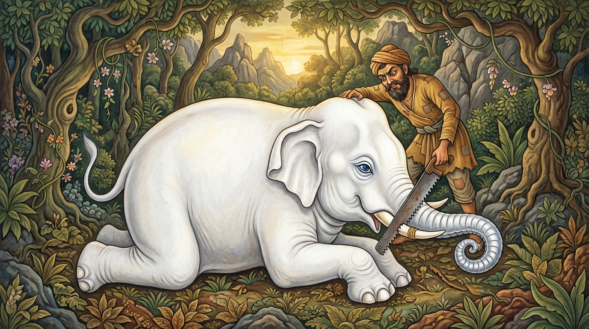

2. සීලව නාගරාජ ජාතකය (72)
“අකතඤ්ඤුස්ස පොසස්ස” (කළගුණ නොදන්නා පුරුෂයාට) යන මේ ජාතක දේශනාව බුදුරජාණන් වහන්සේ වේළුවනයෙහි වැඩවසන කල්හි දේවදත්ත තෙරුන් අරබයා වදාළ සේක. දම් සභාවෙහි රැස්වූ භික්ෂූන් වහන්සේලා, “ඇවැත්නි, දේවදත්ත තෙරණුවෝ කළගුණ නොදන්නෝය. තථාගතයන් වහන්සේගේ ගුණ නොදන්නෝය” යැයි කතා කරමින් සිටියහ. බුදුරජාණන් වහන්සේ එතැනට වැඩම කොට, “මහණෙනි, දැන් කවර කථාවකින් යුක්තව සිටියහුද?” යි විචාරා, “මේ නම් කථාවකින්” යැයි පැවසූ කල්හි, “මහණෙනි, දේවදත්ත තෙම කෙළෙහිගුණ නොදත්තේ දැන් පමණක් නොවේ, පෙර ද කෙළෙහිගුණ නොදත්තෙමය. ඔහු කිසිකලෙක මගේ ගුණ නොදනී” යැයි වදාරා, ඔවුන් විසින් ආරාධනා කරන ලදුව අතීත කථාව ගෙනහැර දැක්වූ සේක.
අතීතයේ බරණැස් නුවර බ්රහ්මදත්ත රජු රාජ්ය කරන සමයේ, බෝධිසත්ත්වයෝ හිමාල වනයේ ඇත් යෝනියෙහි උපන් සේක. ඔහු මවු කුසින් බිහිවන විට මුළු සිරුරම රිදී ගොඩක් මෙන් සුදු පැහැති විය. ඔහුගේ ඇස් මැණික් ගුළි මෙන් විය. පැහැදිලිව පෙනෙන ඉන්ද්රියයන්ගෙන් යුක්ත විය. මුඛය රත් පැහැති පලසක් මෙන් විය. සොඬ රන්වන් බින්දුවලින් විසිතුරු වූ රිදී දම්වැලක් මෙන් විය. පා සතර ලාකඩින් පිරියම් කළාක් මෙන් රත් පැහැති විය. මෙසේ ඔහුට දස පාරමී බලයෙන් අලංකාරවත් වූ රූප ශෝභාවෙන් අගතැන් පත් ආත්ම භාවයක් පිහිටියේය. මුළු හිමවතෙහිම වෙසෙන ඇත්තු රැස්ව, නුවණැති බවට පත් ඔහුට උවටැන් කරමින් හැසිරුණහ. මෙසේ ඔහු අසූ දහසක් ඇතුන් පිරිවරාගෙන හිමවත් පෙදෙසේ වාසය කරද්දී, පසු කාලයකදී සමූහයා තුළ ඇති දොස් දැක, ගණයාගෙන් වෙන්වීමේ අනුසස් දැක, හුදෙකලාව අරණ්යයෙහි වාසය කළේය. සිල්වත් බැවින් ඔහුට ‘සීලව නාග රාජ’ යන නාමය විය.
එකල්හි බරණැස් නුවර වැසි වනචරයෙක් හිමවතට පිවිස, ජීවිකාව සඳහා යමක් සොයමින් යන්නේ, දිශාවන් හඳුනා ගැනීමට නොහැකිව මංමුළා වී, මරණ බියෙන් තැති ගෙන දෑත් ඔසවා හඬමින් ඔබමොබ ඇවිදියි. බෝධිසත්ත්වයෝ ඔහුගේ ඒ බලවත් විලාපය අසා, ‘මේ පුරුෂයා දුකින් මුදවමි’ යි කරුණාවෙන් මෙහෙයවන ලදුව ඔහු වෙත ගිය සේක. ඒ පුරුෂයා බෝධිසත්ත්වයන් දැක බියට පත්ව පලා ගියේය. බෝධිසත්ත්වයෝ පලායන්නා වූ ඔහු දැක එතැනම නැවතුණේය. ඒ පුරුෂයා බෝධිසත්ත්වයන් නැවතුණු බව දැක ඔහු ද නැවතුණේය. බෝධිසත්ත්වයෝ නැවත ඔහු වෙත ගියහ. හෙතෙම නැවතත් පලාගොස්, ඇතු සිටි කල්හි තමා ද නැවතී මෙසේ සිතුවේය: “මේ ඇතා මා පලායන විට නැවතී සිටී. මා නැවතුණු විට ළඟට එයි. මොහු මට අනතුරක් කිරීමට කැමති නැත. මොහු මා මේ දුකින් මුදවනු කැමැත්තෙක්ම වනු ඇත” යි සිතා එඩිතරව සිටියේය. බෝධිසත්ත්වයෝ ඔහු වෙත ගොස්, “පින්වත් පුරුෂය, කුමක් නිසා ඔබ හඬමින් හැසිරෙන්නෙහිද?” යි විචාළේය. “ස්වාමීනි, දිශාවන් තීරණය කිරීමට නොහැකිව මංමුළා වී ඇති වූ මරණ බිය නිසා ය” යි ඔහු කීවේය. ඉක්බිති බෝධිසත්ත්වයෝ ඒ පුරුෂයා තමා වසන තැනට ගෙන ගොස් දින කීපයක් ඵලවැලින් සතපවා, “පින්වත් පුරුෂය, බිය නොවන්න. මම ඔබ මිනිස් වාසයට පමුණුවන්නෙමි” යි පවසා, තමාගේ පිටෙහි හිඳුවාගෙන මිනිස් වාසය දෙසට ගියේය.
ඉක්බිති ඒ මිත්රද්රෝහී පුරුෂයා, “ඉදින් කිසිවෙක් මාර්ගය විමසුවහොත් කිව යුතු වේ” යයි සිතා, බෝධිසත්ත්වයන්ගේ පිටෙහි හුන්නේම ගස් නිමිති සහ පර්වත නිමිති හොඳින් මතක තබා ගනිමින්ම ගියේය. ඉක්බිති බෝධිසත්ත්වයෝ ඒ පුරුෂයා වනයෙන් පිටතට ගෙනවිත් බරණැස් නුවරට යන මහ මඟට බස්සවා, “පින්වත් පුරුෂය, මේ මාර්ගයෙන් යන්න. මා වසන ස්ථානය ගැන කිසිවකු ඇසුවත් නොඇසුවත් නොකියන්න” යැයි ඔහු පිටත් කර යවා තමාගේ වාසස්ථානයටම ගියේය. ඉක්බිති ඒ පුරුෂයා බරණැස් නුවරට ගොස් ඇවිදින්නේ, ඇත්දළ කරුවන්ගේ වීථියට පැමිණ, ඇත් දළින් විසිතුරු භාණ්ඩ තනන්නන් දැක, “පින්වත්නි, ජීවත්ව සිටින ඇතෙකුගේ දළ ලැබුණොත් ගන්නහුද?” යි ඇසීය. “පින්වත, කුමක් කියන්නෙහිද? මළ ඇතෙකුගේ දළට වඩා ජීවමාන ඇතෙකුගේ දළ ඉතා වටිනේය” යි ඔවුහු කීහ. “එසේ නම් මම ඔබට ජීවමාන ඇතෙකුගේ දළ ගෙන එන්නෙමි” යි පවසා මාර්ග උපකරණ ද, තියුණු කියතක් ද රැගෙන බෝධිසත්ත්වයන් වසන ස්ථානයට ගියේය.
බෝධිසත්ත්වයෝ ඔහු දැක, “කුමක් සඳහා ආවෙහිද?” යි විචාළහ. “ස්වාමීනි, මම ධනය නැති දිළින්දෙක්මි. ජීවත්වීමට නොහැකිව ඔබෙන් දළ කැබැල්ලක් ඉල්ලීමට ආවෙමි. ඉදින් ඔබ එය දෙන්නේ නම්, එය ගෙන ගොස් විකුණා ඒ මුදලින් ජීවත් වන්නෙමි” යි ඔහු කීවේය. “පින්වත, එසේ වේවා! ඔබට දළ දෙමි. ඉදින් දළ කැපීම සඳහා කියතක් තිබේ ද?” “ස්වාමීනි, කියතක් රැගෙන ආවෙමි.” “එසේ නම් දළ කියතින් කපා රැගෙන යන්න” යැයි පැවසූ බෝධිසත්ත්වයෝ පා හකුළුවා ගවයෙකු ලගින්නාක් මෙන් පහත් වී සිටියේය. ඔහු ඇතුගේ ප්රධාන දළ දෙකේ අග කොටස් කපා ගත්තේය. බෝධිසත්ත්වයෝ ඒ දළ සොඬින් ගෙන, “පින්වත් පුරුෂය, මම මේ දළ, මට අප්රිය නිසා හෝ අමනාප නිසා හෝ නොදෙමි. මේ දළ දෙකට වඩා සියගුණයකින්, දහස් ගුණයකින්, ලක්ෂ ගුණයකින් සියලු ධර්මයන් අවබෝධ කිරීමට සමත් වූ සර්වඥතා ඥානය නමැති දළ මට වඩාත් ප්රිය වෙයි. ඒ මගේ මේ දළ දානය, සර්වඥතා ඥානය අවබෝධ කරගැනීම පිණිසම හේතු වේවා!” යි සර්වඥතා ඥානය අරමුණු කොට දළ යුවළ දුන් සේක.
ඒ පුරුෂයා දළ යුවළ ගෙනගොස් විකුණා, ඒ මුදල අවසන් වූ කල්හි නැවත බෝධිසත්ත්වයන් වෙත පැමිණ, “ස්වාමීනි, ඔබගේ දළ විකිණීමෙන් ලැබුණු මුදල මගේ ණය ගෙවීම සඳහා පමණක්ම ප්රමාණවත් විය. ඉතිරි දළ කොටස් ද දුන මැනව” යි ඉල්ලීය. බෝධිසත්ත්වයෝ “යහපතැ” යි පොරොන්දු වී පෙර පරිදිම දළ කප්පවා ඉතිරි දළ කොටස් ද දුන්හ. ඔහු ඒවාද විකුණා නැවතත් අවුත්, “ස්වාමීනි, ජීවත්වීමට අපහසුය. දළ මුල් ද දුන මැනව” යි කියා සිටියේය. බෝධිසත්ත්වයෝ “යහපතැ” යි පොරොන්දු වී පෙර පරිදිම පහත් වී සිටියහ. ඒ පාපී පුරුෂයා මහාසත්ත්වයන්ගේ රිදී දම්වැලක් වැනි සොඬ පාගමින්, කෛලාස කූටය හා සමාන වූ කුම්බස්ථලයට නැඟී, දළ කෙළවරට විලුඹෙන් පහර දෙමින්, මස් ඉවත් කොට, කුම්බස්ථලය මත්තෙහි හිඳගෙන තියුණු කියතින් දළ මුල් කපාගෙන ගියේය. බෝධිසත්ත්වයන්ගේ පෙනෙන මානය ඉක්මවා යනවාත් සමඟම, ඒ පාපී පුරුෂයාගේ අගුණ රාශිය දරා සිටීමට නොහැකි වූවාක් මෙන්, දෙලක්ෂ හතළිස් දහසක් යොදුන් ඝන වූ මහ පොළොව—මහමෙර, යුගන්ධර පර්වත ආදී මහා භාරයන් ද, දුගඳ වූ පිළිකුල් සහගත මළ මුත්රාදිය ද දරා සිටීමට සමත් වුවද—පළා ගෙන විවරයක් ඇති කළාය. එකෙණෙහිම අවීචි මහා නිරයෙන් ගිනි ජාලාවක් මතු වී, ඒ මිත්රද්රෝහී පුරුෂයා කුල සන්තක රත් පැහැති කම්බිලියකින් ඔතන්නාක් මෙන් වෙලාගෙන ග්රහණයට ගත්තේය.

මෙසේ ඒ පාපී පුද්ගලයා පොළොව පලාගෙන නිරයට පිවිසි කල්හි, එම වන ලැහැබෙහි අධිගෘහිත රුක් දෙවියා, “කළගුණ නොදත් මිත්රද්රෝහී පුද්ගලයාට සක්විති රාජ්යය දුන්න ද සතුටු කළ නොහැකිය” යි පවසමින් මුළු වනයම නින්නාද කරමින් ධර්මය දේශනා කරන්නේ, මේ ගාථාව ප්රකාශ කළේය:
“කළගුණ නොදන්නා වූ, නිතර (අනුන්ගේ) සිදුරුම සොයන්නා වූ පුරුෂයාට, ඉදින් මුළු මහ පොළොවම (සක්විති රාජ්යය) දුන්නේ වී නමුත්, ඔහු කිසිකලෙකත් සතුටට පත් කළ නොහැක්කේය.”
එහි අර්ථය මෙසේය: “අකතඤ්ඤුස්ස” යනු තමාට කළ උපකාර නොදන්නා තැනැත්තාටය. “පොසස්ස” යනු පුරුෂයාටය. “විවරදස්සිනො” යනු සිදුරම හෙවත් වරදම සොයන්නාටය. “සබ්බං චෙ පථවිං දජ්ජා” යනු ඉදින් එබඳු පුද්ගලයාට මුළු සක්විති රාජ්යය හෝ මේ මහා පොළොව පෙරළා පොළොවේ සාරය දුන්නේ නමුත්; “නෙව නං අභිරාධයෙ” යනු එසේ කළ ද මෙබඳු කළගුණ නසන කිසිවකු සතුටු කිරීමට හෝ පැහැදවීමට නොහැකි වන්නේය යන්නයි.
මෙසේ ඒ රුක් දෙවියා මුළු වනයම නින්නාද කරමින් ධර්මය දේශනා කළේය. බෝධිසත්ත්වයෝ ද ආයු ඇති තාක් සිට කම් වූ පරිදි මිය පරලොව ගිය සේක.
බුදුරජාණන් වහන්සේ, “මහණෙනි, දේවදත්ත තෙම කෙළෙහිගුණ නොදන්නේ දැන් පමණක් නොවේ, පෙර ද කෙළෙහිගුණ නොදත්තේය” යි වදාරා, මේ ධර්ම දේශනාව ගෙනහැර දක්වා පූර්වාපර සන්ධි ගළපා ජාතකය සමාප්ත කළ සේක. “එකල්හි මිත්ර ද්රෝහී පුද්ගලයා වූයේ දේවදත්තය. රුක් දෙවියා වූයේ සැරියුත් තෙරුන්ය. සීලව නම් ඇත් රජු වූයේ මම ම වෙමි.”
දෙවන සීලව නාගරාජ ජාතක වර්ණනාවයි.